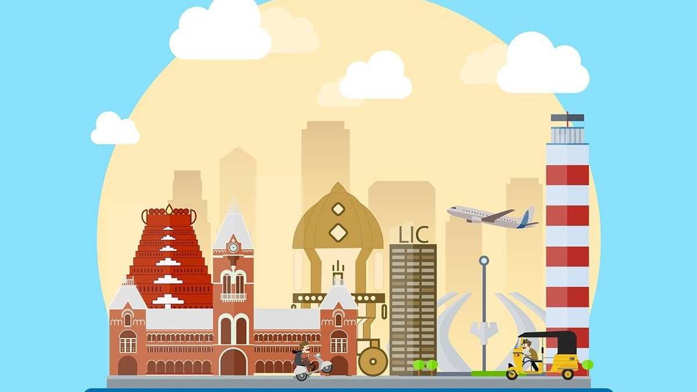
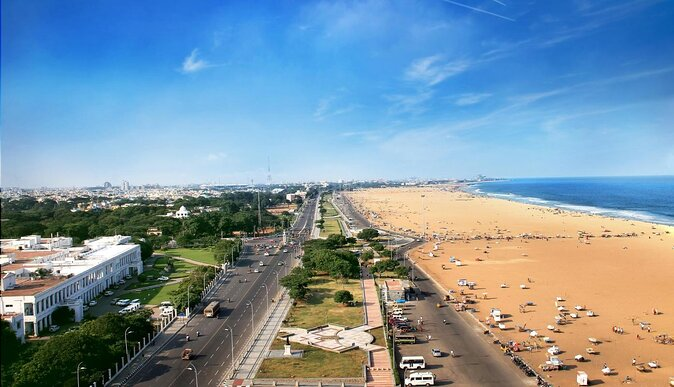
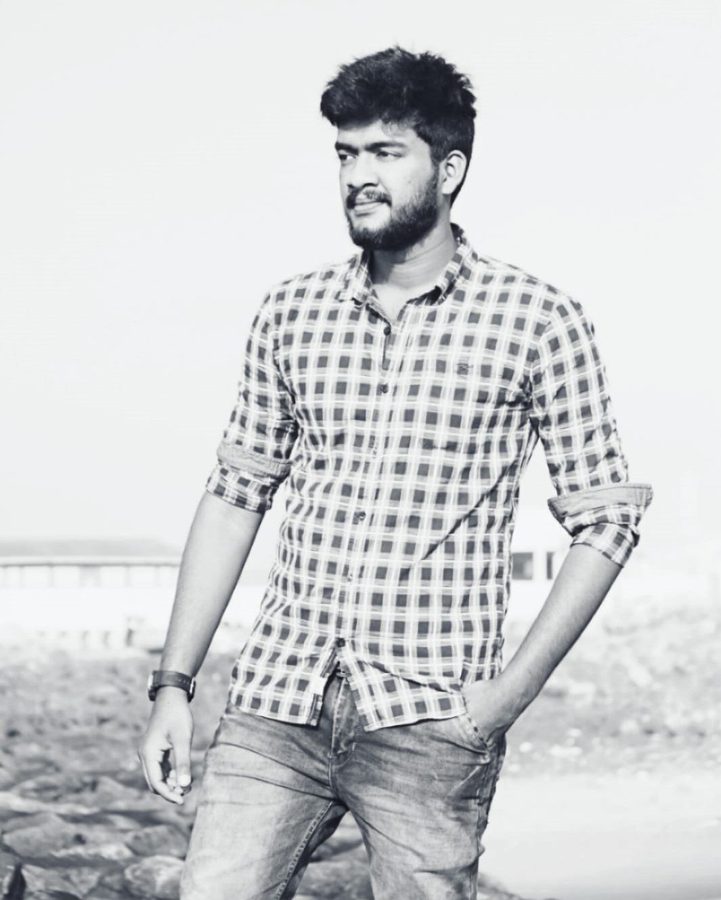

Chennai
Known as the “Gateway to South India,” Chennai is a major administrative and cultural centre.

Relax in world's 2nd largest beach
Marina Beach, or simply the Marina, is a natural urban beach along the Bay of Bengal.

A museum of human history and culture
Where you will find artifacts and sculptures from the past, animal galleries, botany galleries and philately gallery.

Busiest railway station in South India
Originally built in 1873, this iconic Gothic Revival railway station has 17 platforms & 30 tracks.

Your Guide
“I have lived at Chennai for over 25 years, so I can show you all of its best parts and hidden secrets.”
Aravindhan